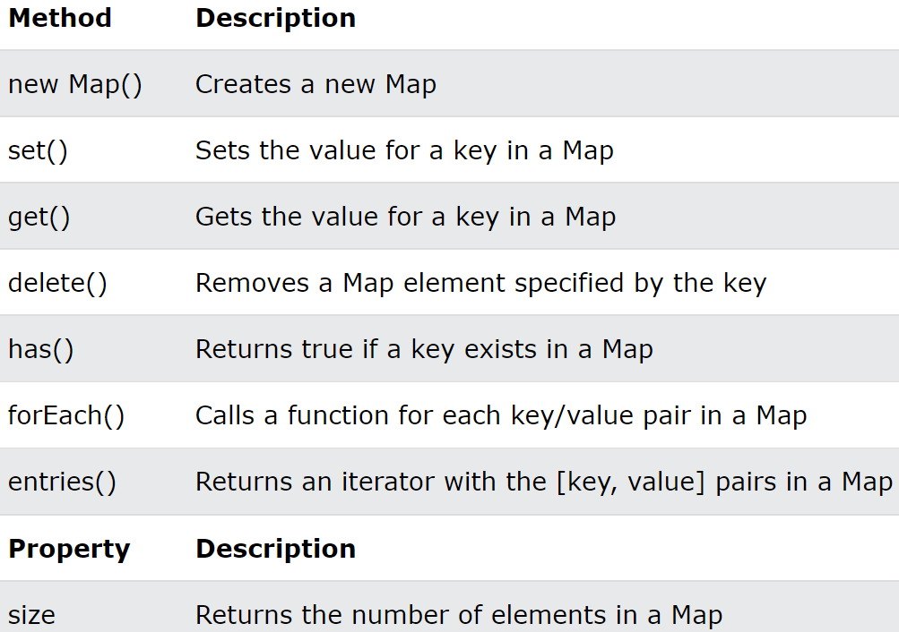

Map : Key / Value형태의 데이터를 한개의 배열로 만들어거 다시 배열에 저장하는 방식
- 선언 및 초기화 : new Map(), new Map(["key", value], ["key", value], ...)
- 기본적으로 중첩 구조이기때문에 Key의 중복확인이 필수
- Key를 식별자로 사용하는 방식이므로 get("KeyName"), set("KeyName", value)메서드를 제공
- 자바스크립트 객체를 배열화시킨 구조라고 생각하면 편함, 2차원 배열과 비슷한형식
- 기본적으로 Map은 타입제한(문자열추천)을 하는것이 원칙이다!, key의 타입이 달라지면 관리가 어려워지기 때문, 자바스크립트 객체도 key는 모두 문자열을 사용하는것과 같은 원리

Javascript Object VS Map